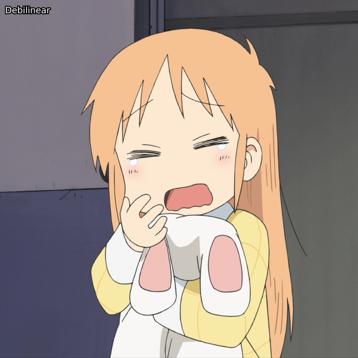
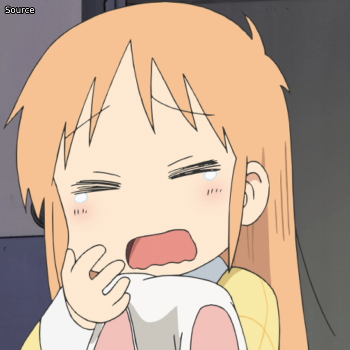
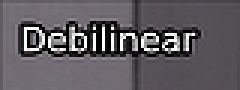

Descaling
If you've read a bit about anime encoding, you've probably heard the term "descaling" before; this is the process of "reversing" an upscale by finding the native resolution and resize kernel used. When done correctly, this is a near-lossless process and produces a sharper output than standard spline36 resizing with less haloing artifacts. However, when done incorrectly, this will only add to the already existing issues that come with upscaling, such as haloing, ringing etc.
The most commonly used plugin to reverse upscales is Descale, which is most easily called via fvsfunc, which has an alias for each kernel, e.g. fvf.Debilinear.
This supports bicubic, bilinear, lanczos, and spline upscales.
Most digitally produced anime content, especially TV shows, will be a bilinear or bicubic upscale from 720p, 810p, 864p, 900p, or anything in-between. While not something that can only be done with anime, it is far more prevalent with such content, so we will focus on anime accordingly.
As our example, we'll look at Nichijou, which is a bilinear upscale from 720p.
To showcase how nice a descale can look, let's compare with a standard spline resize:
descale = fvf.Debilinear(src, 1280, 720)
spline = src.resize.Spline36(1280, 720)
out = core.std.Interleave([descale, spline])

Native resolutions and kernels
Now, the first thing you need to do when you want to descale is figure out what was used to resize the video and from which resolution the resize was done. The most popular tool for this is getnative, which allows you to feed it an image, which it will then descale, resize, and calculate the difference from the source, then plot the result so you can find the native resolution.
For this to work best, you'll want to find a bright frame with very little blurring, VFX, grain etc.
Once you've found one, you can run the script as follows:
python getnative.py image.png -k bilinear
This will output a graph in a Results directory and guess the resolution.
It's based to take a look at the graph yourself, though.
In our example, these are the correct parameters, so we get the following:

There is a clear dip at 720p. We can also test other kernels:
python getnative.py image.png -k bicubic -b 0 -c 1
The graph then looks as follows:

If you'd like to test all likely kernels, you can use --mode "all".
To double check this, we compare the input frame with a descale upscaled back with the same kernel:
descale = fvf.Debilinear(src, 1280, 720)
rescale = descale.resize.Bilinear(src, src.width, src.height)
merge_chroma = rescale.std.Merge(src, [0, 1])
out = core.std.Interleave([src, merge_chroma])
Here, we've merged the chroma from the source with our rescale, as chroma is a lower resolution than the source resolution, so we can't descale it. The result:

As you can see, lineart is practically identical and no extra haloing or aliasing was introduced.
On the other hand, if we try an incorrect kernel and resolution, we see lots more artifacts in the rescaled image:
b, c = 0, 1
descale = fvf.Debicubic(src, 1440, 810, b=b, c=c)
rescale = descale.resize.Bicubic(src, src.width, src.height, filter_param_a=b, filter_param_b=c)
merge_chroma = rescale.std.Merge(src, [0, 1])
out = core.std.Interleave([src, merge_chroma])
Mixed Resolutions
The example above of incorrect kernel and height should make it obvious that descaling incorrectly is quite destructive. Unfortunately, most video that can be descaled has elements in other resolutions. Sometimes, different elements in a frame will have different resolutions, e.g. the background is in 900p, character A is in 810p, and character B is in 720p. In cases like this, it's usually safer to do a simple spline36 resize. One can technically do a lot of masking to fix this, but that's a lot of effort and masks failing is going to be likely.
A more common situation in which one will encounter mixed resolutions is credits and overlays, which are usually in 1080p. Let's look at what happens if we add some text to the above frame and descale that compared to a spline36 resize on it. To make comparing easier, these images are zoomed in by a factor of 3:

The debilinear resize clearly adds stronger haloing artifacts here.
To deal with this, we can use the DescaleM functions from fvsfunc, which mask these elements and scale them via a spline36 resize:
descale = fvf.DebilinearM(src, 1280, 720)
As these functions are comparatively slow, you might want to consider finding these elements beforehand and applying the function only to those frames. If you aren't certain that your frame doesn't have 1080p elements, though, stick with these functions.
Alternatively, in very rare cases, the resolution and/or kernel will change scene-by-scene, or even worse, frame-by-frame.
You can consider trying lvsfunc.scale.descale, which tries to find the ideal height for each frame.
Ideally, however, you should do this manually.